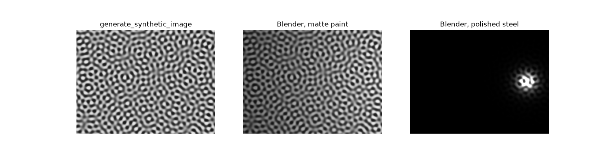

Note
Go to the end to download the full example code.
Rendering synthetic images with Blender#
pysdic.generate_synthetic_image() gives the exact gray levels of the texture, without
lighting. pysdic_blender renders the same scene with Blender (Cycles): a spot light,
shading and the reflections of a material. This example renders a speckled plate with a matte
paint and with polished steel.
Important
Requires pysdic-blender (pip install pysdic-blender), which installs bpy: use the
version of Python of Blender (Python 3.13 for Blender 5.1).
The scene#
A camera of the OpenCV pinhole model looks at a speckled plate from 5 units above. The mesh
is a triangle_3 heightmap with a UV map: the only meshes Blender renders exactly.
import numpy
from pysdic import (
Camera, PerspectiveExtrinsic, PinholeIntrinsic, compute_wave_speckle, create_3d_triangle_3_heightmap,
generate_synthetic_image,
)
camera = Camera(
180, 240,
extrinsic=PerspectiveExtrinsic.from_rt(rvec=[numpy.pi, 0.0, 0.0], tvec=[0.0, 0.0, 5.0]),
intrinsic=PinholeIntrinsic.from_matrix([[300.0, 0.0, 119.5], [0.0, 300.0, 89.5], [0.0, 0.0, 1.0]]),
)
plate = create_3d_triangle_3_heightmap(x_bounds=(-2.5, 2.5), y_bounds=(-2.0, 2.0), n_x=11, n_y=9)
x, y = numpy.linspace(-2.5, 2.5, 500), numpy.linspace(2.0, -2.0, 400) # First row: v = 1
speckle = compute_wave_speckle(numpy.stack(numpy.meshgrid(x, y), axis=-1), wavelength=0.15)
Conversion for Blender#
pysdic_blender.BlenderCamera checks that the camera follows the OpenCV model (and has
no distortion) and computes the parameters of the Blender camera. pysdic_blender.BlenderMesh
extracts the triangles, the UV coordinates and the texture as a reflectance in \([0, 1]\).
These conversions do not need Blender.
from pysdic_blender import BlenderCamera, BlenderMesh
blender_camera = BlenderCamera(camera)
blender_mesh = BlenderMesh(plate, texture=speckle)
print(blender_camera)
print(blender_mesh)
BlenderCamera(240x180 pixels, lens=3.000 mm, sensor_fit='HORIZONTAL', shift=(-0.0000, 0.0000))
BlenderMesh(99 vertices, 160 triangles, texture 500x400)
Rendering#
The scene is lit by a spot light on the side, plus a weak ambient light. The same mesh is rendered with two materials: a matte paint (diffuse, the gray levels barely depend on the point of view) and polished steel (metallic: a highlight in the direction of the mirror reflection of the light). Each render is a linear intensity, mapped here to gray levels.
import matplotlib.pyplot as plt
from pysdic_blender import BlenderExperiment, BlenderSpotLight, get_matte_paint_material, get_steel_material
images = {"generate_synthetic_image": generate_synthetic_image(camera, plate, speckle, n_samples=2)[..., 0]}
experiment = BlenderExperiment(background_strength=0.1)
experiment.add_camera("camera", blender_camera)
experiment.add_spotlight("spot", BlenderSpotLight.looking_at([3.0, 0.0, 6.0], [0.0, 0.0, 0.0], energy=2000.0, spot_size=numpy.pi / 3))
for name, material in (("matte paint", get_matte_paint_material()), ("polished steel", get_steel_material())):
experiment.add_mesh("plate", blender_mesh, material=material)
render = experiment.render("camera", n_samples=64)
images[f"Blender, {name}"] = 230.0 * render / numpy.percentile(render, 99.5) # Gray levels
experiment.remove_mesh("plate")
fig, axes = plt.subplots(1, len(images), figsize=(5 * len(images), 4), squeeze=False)
for ax, (title, image) in zip(axes[0], images.items()):
ax.imshow(image, cmap="gray", vmin=0, vmax=255)
ax.set_title(title)
ax.axis("off")
plt.show()

Total running time of the script: (0 minutes 3.747 seconds)